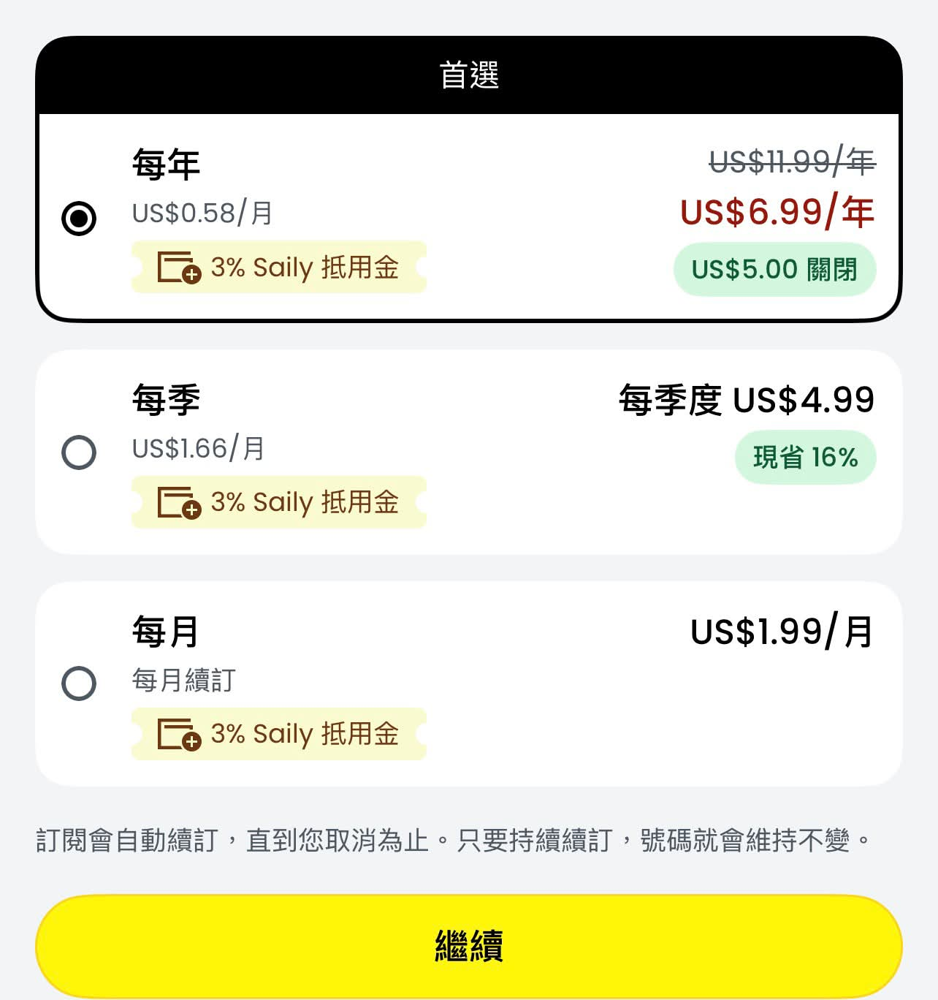

Saily 美國電話號碼訂閱｜優惠截圖、續費與驗證限制
貼文與價格：個案而非保證
旅世界（@jy.trip365）分享美國號碼養號與里程／會籍匹配的個人經驗，作者續文提供優惠券 JYTRIP365 與推廣入口；優惠資格、有效期及推廣利益未核實。作者稱實測可用，但未提供完整測試條件。原帖圖片顯示年繳折扣後 US$6.99、月均 US$0.58；另一訂單畫面顯示折扣 US$5 和下一次收費 US$11.99／年。這只是作者當時的畫面，不保證目前或每人價格、稅費及優惠資格；匯率變動，不保證每月少於新台幣 20 元。訂閱畫面標示自動續訂，實際續訂與取消條款應在結帳前核對。

圖片為作者原帖的公開壓縮版本，署名原作者，重用授權未確認；價格只是截圖時的資訊。第二張為個人訂單與抵用金畫面，雖號碼遮蔽，保守不鏡像。
官方查核（2026-11-17）
- Saily 說電話號碼是搭配數據 eSIM 的可選附加項；號碼使用網路技術，部分服務會視為 VoIP，尤其某些銀行、金融及支付服務不接受驗證。不能保證里程、銀行或任何平台驗證成功。官方列出常見相容服務，也明示非保證且可能變動。
- 官方說通話套餐僅支援當地通話，不支援國際通話；台灣在可通話地區名單，不等於可從台灣撥打美國客服，具體路由及費率需向 Saily 確認。來電與去電均消耗通話分鐘；號碼訂閱價格不等於通話及數據全包。
- 官方列出不支援 MMS、簡碼付費電話及簡訊、通話轉接；個別驗證短碼能否送達不可保證。官方稱來電者可能依其電信商的美國國際電話費率計費。
- 本次沒有註冊、購買、安裝、啟用或測試；作者續文的優惠連結與其他留言、Meta AI 回覆不是官方保證。
來源
原始分享：https://www.threads.com/share/BAWRVkfbOn
原帖：https://www.threads.com/@jy.trip365/post/Df1CDDUE03H
作者優惠續文：https://www.threads.com/@jy.trip365/post/Df1CN_ik5LY
官方產品說明：https://support.saily.com/hc/en-us/articles/27948598334620-What-is-a-Saily-phone-number